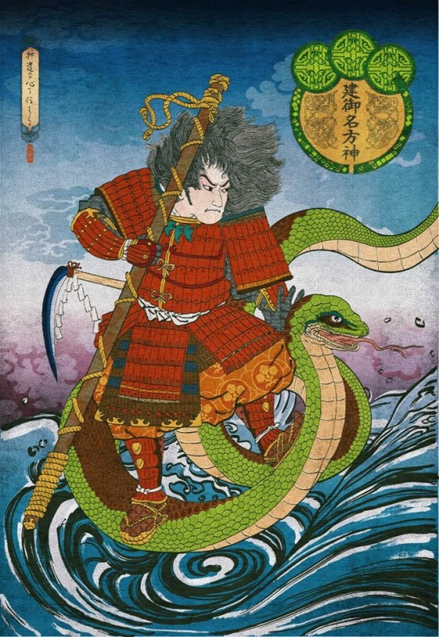

Antes da criação de tudo em um período conhecido como Kuniumi. Os primeiros Kamis, os Kotoamatsukami (別天神), surgiram a partir do caos, o principal destes era Ame-no-minakanushi, o primeiro Kami a existir no universo, ele é associado a estrela do norte e a constelação das sete estrelas, uma conotação que não durou muito tempo. Por conta do conflito gerado com a vinda dos missionários Budistas durante o período Heiano, o culto a este Deus quase desapareceu. Seu nascimento foi seguido de outros 4, Takamimusubi, Kamimusubi, Umashi’ashikabihikoji e Amenotokotachi, estes 5 deuses criaram Takamagahara (高天原), os céus e Ashihara no Nakatsukuni (葦原の中つ国), a terra e os ligaram por uma ponte chamada Ama-no-uki-hashi.
Estes 5 deuses foram seguidos pelos Kamiyonanayo, os deuses que vieram após a criação e que ao contrário dos anteriores, vieram em pares de homens e mulheres com gênero definido, eles eram Uhijini e Ikuguhi, Otonoji e Otonobe, Omodaru e Aya-kashiko-ne e por fim Izanagi-no-Mikoto e Izanami-no-Mikoto.
Estes deuses não possuem uma forte adoração apesar de sua importância na mitologia shintoísta, não existem templos conhecidos onde eles podem ser adorados
Izanagi e Izanami

Izanagi e Izanami foram os ultimos deuses Celestiais a surgirem durante o Kuniumi, o jovem casal recebeu a ordem dos demais Deuses para que consolidassem a criação das ilhas Japonesas, assim começando o Kamiumi, o surgimento do japão e o nascimento dos deuses terrestres. Para fazerem isto eles receberem Amenonuhoko, uma lança incrustada com jóias e que em algumas fontes da história era na verdade uma Naginata. O casal teria descido pela ponte em direção ao oceano primordial que se tornaria a terra, Izanagi remexeu a água turva e barrenta do mundo e ergue a lança para um pouco de água respingasse dela, quando uma unica gota de água respingou da lança e caiu de volta ao oceano, uma ilha surgiu. Eles chamaram essa ilha de Onogoro-Shima e fizeram sua casa lá, até hoje ninguém sabe onde fica essa ilha
Na ilha, Izanagi e Izanami construiram um enorme palácio e o adornaram com colunas e pilastras. Os deuses ordenaram que eles procriassem a partir de um ritual muito específico, neste ritual, eles iriam se encontrar na frente da casa, iriam virar de costas um para o outro e dar a volta na casa, ao se encontraram do outro lado, Izanagi se curvaria e depois Izanami, e após isso, eles poderiam fazer sexo entretanto, a primeira vez que fizeram o ritual, fizeram errado com Izanami se curvando primeiro, quando tiveram um filho, hiruko nasceu sem braços, sem pernas e sem ossos então teriam mandado ele em um barco a deriva pelo oceano antes de seu terceiro aniversário. A próxima vez que tentaram o ritual, eles fizeram certo e assim conseguiram criar as 8 ilhas principais do Japão: Tsushima, Iki, Oki, Iyo, Awaji, Tsukushi, Sado e Yamato, a ilha principal do país
Após originar as ilhas do Japão, o casal passou a dedicar sua vida para gerar novos deuses, deuses nascidos na própria terra, estes deuses formaram o conceito de Yaoyorozu no Kami e povoaram a terra, tudo que o casal tocava, o ar que respiravam, a comida que comiam ou deixavam de comer, sua urina, suas fezes e seu sangue, deuses estavam nascendo o tempo todo além daqueles que nasciam tradicionalmente quando os dois transavam. Kagu-Tsuchi, um deus do fogo teria sido o ultimo criado por Izanami, seu nascimento teria sido desastroso, queimando a passagem vaginal de Izanami e a matando. A morte de Izanami teria abalado Izanagi profundamente, enquanto ele enterrava sua irmã, suas lágrimas se transformavam em deuses que apareciam para consola-lo, enfim, um dia ele teria decidido acabar com a vida de Kagu-Tsuchi, usando a espada de Dez mãos, Ame no Ohabari, ele teria cortado a cabeça de seu filho, de seus restos mortais, mais deuses surgiriam. Após isso, desejando se encontrar sua esposa, ele vai para Yomi, o mundo dos mortos de acordo com o shinto, lá ele encontra sua esposa coberta por escuridão, quando ele pediu para ela retornar ao mundo, ela rejeitou, dizendo que já havia comida da comida servida no mundo dos mortos e não poderia retornar, ao fim, ela pediu para que Izanagi não olhasse para seu rosto. O homem teimoso quebrou esta promessa e ao olhar ao seu rosto, viu apenas um cadáver comido por vermes, furiosa, Izanami manda o Deus do Trovão, Raijin e as Yomotsu-Shikome, Mulheres Onis de Yomi atrás de Izanagi, enquanto fugia, Izanagi joga uma bandana que estava em sua cabeça e depois seu pente para dispersar os monstros, no fim, ele sela a passagem para Yomi com uma pedra. Izanami joga maldições contra seu marido dizendo que todo dia mataria mil pessoas na terra, Izanagi responde sua maldição dizendo que faria com que mil e quinhentas pessoas nascessem todos os dias
Amaterasu

Após escapar de sua irmã em Yomi e selar a entrada, Izanagi viajou para uma cachoeira onde tirou sas vestes e lavou seu corpo, neste momento 3 Deuses nasceram, ao enxaguar seu olho esquerdo, Amaterasu, a Deusa do Sol nasceu, ao enxaguar seu olho direito, Tsukuyomi, a Deusa da Lua nasceu e ao enxaguar seu nariz, Suzanoo, o Deus selvagem nasceu. Izanagi delegou os 3 Deuses para suas funções, porém Suzanoo, triste com a ausência de sua mãe, questiona Izanagi se a pode visitar no mundo dos morto, Izanagi fica furioso e o expulsa de sua função. Antes de ir embora, Suzanoo sobe aos céus para se despedir de Amaterasu, a deusa suspeita de suas intenções e aparece para ele completamente armada e vestindo uma armadura. Suzanoo propõe então um trato para mostrar sua sinceridade, os dois Deuses apresentam objetos sagrados que possuíam, eles iriam então trocar os objetos entre si, comer e então cuspir de volta. Suzanoo apresentou a espada Totsuka no Tsurugi, Amaterasu comeu a espada e então a cuspiu, quebrando-a em 3 partes, dessa divisão, 3 deusas surgiram: Takiribime, Ichikishima-hime e Tagitsu-hime. Suzanoo pegou as contas do rosário que Amaterasu usava para enrolar seus cabelos, comeu e cuspiu, gerando 5 deuses: Ame-no-Oshihomimi, Ame-no-Hohi, Amatsuhikone, Ikutsuhikone e Kumano-no-Kusubi. Amaterasu clamou que os deuses gerados por Suzanoo pertenciam a ela pois teriam sido gerados por um item dela, Suzanoo, furioso e temperamental, causa um alvoroço no palácio celestial, jogando um cavalo nos aposentos de Amaterasu e matando uma ninfa que vivia lá. Amaterasu assustada, se escondeu na caverna Ama-no-Iwato, colocando os céus e a terra em escuridão profunda
Enquanto Amaterasu estava escondida na caverna, os deuses terrestres, liderados por Omoikane, o Deus do conhecimento, desenvolveram um plano para fazer com que ela saia: Eles colocaram diversas magatamas nos galhos de uma árvore que ficava na frente da caverna e em um dos galhos colocaram também um espelho, Ame-no-Koyane-no-Mikoto começou a recitar diversos poemas. Ame-no-Uzume, a deusa das manhãs e das artes começou a dançar em frente aos demais deuses enquanto segurava uma pedra de jade em sua mão e um sino na outra, isto fez com que os demais deuses logo começassem a gargalhar. Amaterasu questionou a razão da festa e Uzumu respondeu que eles estavam celebrando que um Deus maior que ela havia aparecido. Curiosa, Amaterasu se aproximou da saída da caverna para ver quem era, ao se ver no reflexo do espelho, Ame-no-Tajikarao puxou sua mão e a trouxe de volta da caverna e a selou com corda. A dança feita por Uzumu logo recebou um nome oficial e passou a ser parte da liturgia oficial do Shintoísmo, Kagura.
Um dia, os Deuses celestiais incluindo Amaterasu viram que a terra estava em calamidade, ela estaria populada por kamis cruéis e com corações ruins, o decreto oficial da Deusa do sol foi que a terra fosse pacificada e que o seu controle fosse passado aos Deuses celestiais para isso, Amaterasu ordenou que Ame-no-Oshihomimi, um de seus filhos, descesse a ponte que conecta o céu e a terra para averiguar a situação, o menino ficou com medo do tumulto e se recusou a descer. Amaterasu então mandou outro filho seu, Ame-no-hohi, o mais poderoso de todos entretanto, a lábia de Okuninushi era tão grande que o menino se recusou a voltar para sua mãe e traiu os deuses do céu, novamente, Amaterasu mandou um mensageiro, Ame-no-wakahiko. Entretanto, ele também veio a se juntar com Okuninushi e até mesmo se casou com sua filha Shitateru-hime, Amaterasu, visivelmente frustrada, enviou um Faisão para questionar seu filho. Sob as ordens de Ame-no-Sagume, uma deusa terrestre, Wakahiko disparou uma flecha contra o faisão, o matando. A flecha sangrenta teria atravessado o céu chegando aos pés de Amaterasu que furiosa teria a arremessado de volta para a terra, matando Ame-no-Wakahiko instantaneamente.
八百万の神 - Yaoyorozu no Kami, miríades de deuses
Takeminakata
Takeminakata-no-Kami também conhecido como Suwa Myōjin ou "O Deus manifesto de Suwa" era o governador do mundo de Ashihara no Nakatsukuni antes do aparecimento da linhagem imperial Japonesa. Ele governava o mundo com punho de ferro, comandando os demais deuses como um exército militar. Seu pai era Ōkuninushi, o Deus da agricultura, medicina e o primeiro patrono do Japão, este Deus teve um papel muito importante na criação do Japão ao tornar a terra habitável aos humanos e criar selos e amuletos que os protegeriam contra doenças e calamidades
Amaterasu decidiu então enviar Takemikazuchi, o deus do trovão, nascido do sangue de Kage-Tsuchi, o deus do Fogo. Takemikazuchi era um guerreiro extraordinário e igualmente brutal, ao chegar na terra, Takemikazuchi desafiou Okuninushi para um duelo